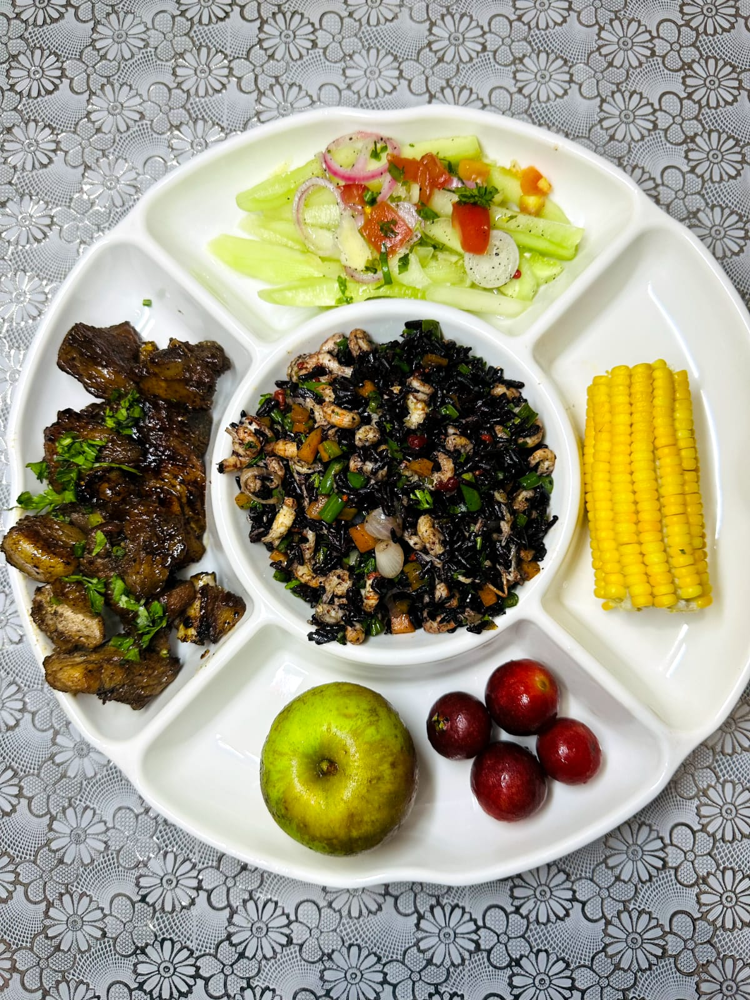

Top créations BIO MADA Sakafo
Découvrez 4 recettes signatures, saines et gourmandes.
Cookies aux haricots noirs
Des cookies originaux à base de haricots noirs, riches en goût et en caractère. Une alternative gourmande, pensée pour allier plaisir et équilibre avec des ingrédients locaux soigneusement sélectionnés.


Assiette équilibrée aux haricots noirs, poisson mijoté à la tomate & pâtes fondantes
Cette assiette équilibrée offre un voyage savoureux entre terre et mer, mariant harmonieusement un poisson mijoté aux oignons et à la tomate avec des pâtes fondantes délicatement persillées. L'apport en fraîcheur et en nutriments est assuré par une salade croquante de haricots noirs, maïs et carottes râpées, tandis qu'une sélection de fruits frais (poire et baies) apporte une note finale naturellement sucrée. C’est un repas complet, coloré et parfaitement proportionné, idéal pour ceux qui recherchent une alimentation saine sans sacrifier le plaisir gustatif.


Riz noir bien-être au porc sauté World Cola
Cette assiette bien-être se distingue par son audacieux riz noir central, agrémenté de petits légumes pour une texture riche en fibres, accompagné d'un savoureux porc sauté au World Cola dont la laque sombre et caramélisée promet des notes sucrées-salées uniques. L'équilibre du plat est complété par un achard de concombre croquant aux oignons rouges et tomates pour une touche d'acidité rafraîchissante, ainsi qu'un épi de maïs tendre à la couleur éclatante. Fidèle à une approche nutritionnelle complète, ce plateau intègre également une portion de fruits frais, alliant plaisir gourmand et vitalité dans une présentation élégante et structurée.
Mini bûchette velvet au riz noir
Une création généreuse qui marie riz noir et haricots noirs pour un résultat à la fois nourrissant et savoureux. Idéal pour une pause saine, avec une bonne sensation de satiété.